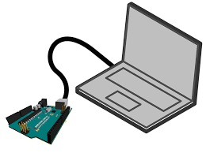
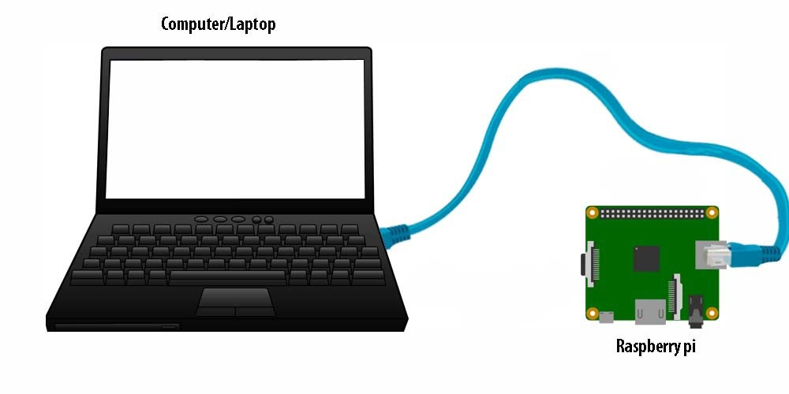
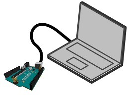
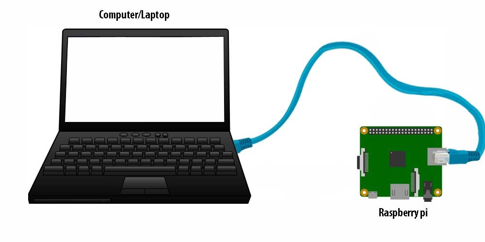

Overview
This project will be an Arduino based water monitoring device that tracks how long a person has been in the shower (or using another water based appliance) and then can shut off the water (hot / cold / both) after a predefined period of time. The Arduino will also have the capacity to send information to a central system that informs the user how much water they have been using whilst showering, as well as how much they have saved or used in comparison to the average household. The user can either choose to have a separate screen that displays the information, or download a smartphone app to deliver relevant information into their hand.

 The brain of the product will be an Arduino, connected to a reasonably large reserve battery, and then plugged into a wall socket. In order to activate the shower monitor, there will be a button attached to the outside of an air/water-tight container that the Arduino, battery, buzzer, and wires will sit in. Also, on the outside of the box will be an on/off switch, this is in case the programming inside the Arduino goes loopy and needs to be reset. The shower monitor will also feature a master-override key, allowing the user to increase the time of their shower in cases of necessity - where families are involved it would be wise to keep this out of reach of younger children.
In order to alert the user of the approaching time limit of their shower, there will also be a loud (or quiet, depending on user preference) beeper or buzzer that goes off twice when there is two minutes left of their shower, once when there is one-minute left, and then counts down the last ten seconds in short beeps. In place of the buzzer, it would also be possible to install LED lights that flash at the designated times instead, for a less abrasive experience.
Unless the user opts to simply use the shower monitor as a timer rather than an intervention method, the shower monitor will also be connected via wire (or possibly wi-fi/Bluetooth if wireless solenoids exist at a reasonable price) to an electronic hot-water solenoid. The solenoid, unless activated by the Arduino, will naturally be in the “off” position, meaning that should a user attempt to turn on the hot water to their shower without activating the shower monitor, only cold water will come out. Similarly, once the timer runs out, the solenoid will shut off, giving the user a few seconds to turn off the shower before they are shocked by cold water.


The box will be small, easily concealed and airtight. While it may seem silly to have an airtight container when the box won’t actually be in the shower, steam can still permeate through non-airtight boxes and damage the electronic components inside, potentially trapping the user in cold showers until the parts are replaced. The reserve battery exists in case of power failure to the house. If it were just connected to a power socket, when there are power outages a person would not be able to use their shower.
If the user so desires, it would also be possible to fit their pipeline with an electronic water flow meter, making it possible to communicate to the Arduino how much water has flown through the pipe in ‘x’ amount of time. The Arduino could then relay this information over a wi-fi or Bluetooth network to a central server or the person’s phone directly, allowing them to check how much water had actually been used by their shower, in what period of time, and then by extension, how much other machines are contributing to the water bill. This would also allow us to create a function in the app where the user can see how much water they have saved by using the water monitor, in comparison to similar households.
The brain of the product will be an Arduino, connected to a reasonably large reserve battery, and then plugged into a wall socket. In order to activate the shower monitor, there will be a button attached to the outside of an air/water-tight container that the Arduino, battery, buzzer, and wires will sit in. Also, on the outside of the box will be an on/off switch, this is in case the programming inside the Arduino goes loopy and needs to be reset. The shower monitor will also feature a master-override key, allowing the user to increase the time of their shower in cases of necessity - where families are involved it would be wise to keep this out of reach of younger children.
In order to alert the user of the approaching time limit of their shower, there will also be a loud (or quiet, depending on user preference) beeper or buzzer that goes off twice when there is two minutes left of their shower, once when there is one-minute left, and then counts down the last ten seconds in short beeps. In place of the buzzer, it would also be possible to install LED lights that flash at the designated times instead, for a less abrasive experience.
Unless the user opts to simply use the shower monitor as a timer rather than an intervention method, the shower monitor will also be connected via wire (or possibly wi-fi/Bluetooth if wireless solenoids exist at a reasonable price) to an electronic hot-water solenoid. The solenoid, unless activated by the Arduino, will naturally be in the “off” position, meaning that should a user attempt to turn on the hot water to their shower without activating the shower monitor, only cold water will come out. Similarly, once the timer runs out, the solenoid will shut off, giving the user a few seconds to turn off the shower before they are shocked by cold water.


The box will be small, easily concealed and airtight. While it may seem silly to have an airtight container when the box won’t actually be in the shower, steam can still permeate through non-airtight boxes and damage the electronic components inside, potentially trapping the user in cold showers until the parts are replaced. The reserve battery exists in case of power failure to the house. If it were just connected to a power socket, when there are power outages a person would not be able to use their shower.
If the user so desires, it would also be possible to fit their pipeline with an electronic water flow meter, making it possible to communicate to the Arduino how much water has flown through the pipe in ‘x’ amount of time. The Arduino could then relay this information over a wi-fi or Bluetooth network to a central server or the person’s phone directly, allowing them to check how much water had actually been used by their shower, in what period of time, and then by extension, how much other machines are contributing to the water bill. This would also allow us to create a function in the app where the user can see how much water they have saved by using the water monitor, in comparison to similar households.